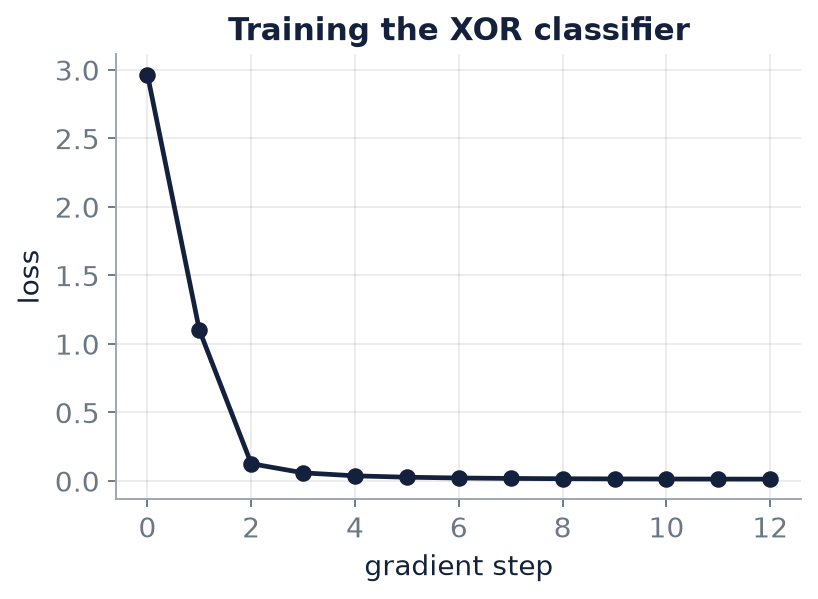
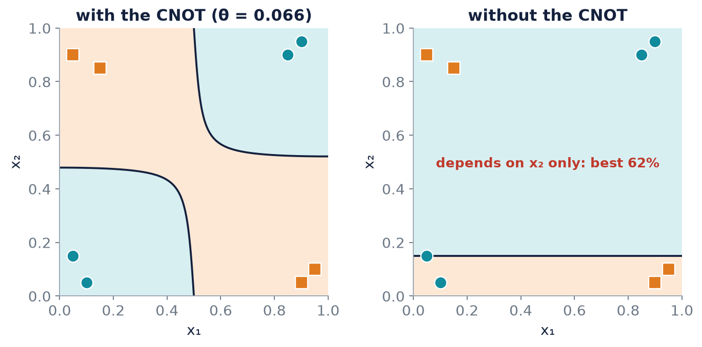

Chapter 11: Case Study: Learning XOR with an Entangling Circuit¶
Chapters 9 and 10 built the parts of a variational classifier: the encoding, the ansatz, the readout, the loss and the gradient. This chapter puts them together on one complete problem and carries it from the first circuit trace to the final trained classifier, deriving the model's closed form along the way. The problem is XOR, the very dataset that no straight line can separate (Chapter 4). It is small enough to be solved entirely by hand and rich enough to show something essential about quantum models: that the two-qubit entangling gate is what lets a circuit combine features. Without it the model cannot even see both inputs at once.
11.1 The task and the circuit¶
XOR is the stair-light problem: a light at the top of the stairs controlled by a switch at the top and one at the bottom, so that the light depends on the combination of the two switch positions, not on either alone. The class is \(0\) when \(x_1\) and \(x_2\) are both small or both large, and \(1\) otherwise. No straight line separates the classes.
We use targets \(y=+1\) for class \(0\) and \(y=-1\) for class \(1\). There are eight noisy training points, two near each corner of the unit square, and four more points held back for testing:
| \(x_1\) | \(x_2\) | class | \(x_1\) | \(x_2\) | class | |
|---|---|---|---|---|---|---|
| 0.10 | 0.05 | 0 | 0.05 | 0.90 | 1 | |
| 0.05 | 0.15 | 0 | 0.15 | 0.85 | 1 | |
| 0.90 | 0.95 | 0 | 0.95 | 0.10 | 1 | |
| 0.85 | 0.90 | 0 | 0.90 | 0.05 | 1 |
The test points are \((0.20,0.10)\) and \((0.80,0.85)\) of class \(0\), and \((0.10,0.80)\) and \((0.85,0.20)\) of class \(1\).
The circuit uses two qubits, one per feature, a single trainable rotation, and one entangling gate:
q0: ──R_Y(π·x1)──■────────────────────
│
q1: ──R_Y(π·x2)──X──R_Y(θ)── measure Z
The two features are encoded as rotations \(R_Y(\pi x_1)\) on \(q_0\) and \(R_Y(\pi x_2)\) on \(q_1\); a CNOT with control \(q_0\) and target \(q_1\) lets the features interact; and a trainable \(R_Y(\theta)\) acts on \(q_1\). The model output is \(f(x;\theta)=\langle Z_1\rangle\), the expectation of \(Z\) on \(q_1\), and the class is \(0\) if \(f>0\) and \(1\) if \(f<0\). Training starts at \(\theta=2.5\) with learning rate \(\eta=0.5\).
Example 11.1: a variational classifier for XOR
(a) Trace the state for the corner \((1,0)\) at \(\theta=2.5\). (b) Derive \(f(x;\theta)\) in closed form. (c) Train with the parameter-shift rule. (d) Explain why the CNOT is necessary.
The four parts are worked in the next sections.
11.2 Part (a): trace one input through the circuit¶
Take the corner \(x=(1,0)\) at \(\theta=2.5\).
- Encode. \(R_Y(\pi)\lvert0\rangle=\lvert1\rangle\) on \(q_0\), and \(R_Y(0)\lvert0\rangle=\lvert0\rangle\) on \(q_1\). The state is \(q_0=1\), \(q_1=0\).
- CNOT. The control \(q_0\) is \(1\), so the target flips: \(q_1=0\oplus1=1\).
- Rotate. \(R_Y(\theta)\lvert1\rangle=-\sin\frac\theta2\lvert0\rangle+\cos\frac\theta2\lvert1\rangle\) on \(q_1\).
- Measure. \(\langle Z_1\rangle=\sin^2\frac\theta2-\cos^2\frac\theta2=-\cos\theta\).
So \(f=-\cos2.5=+0.8011\), which predicts class \(0\).
Wrong, and wrong everywhere
The corner \((1,0)\) is class \(1\), so the prediction is wrong. In fact at the four clean corners the output is \(f=\cos\theta\cdot(-1)^{x_1\oplus x_2}\), and \(\cos2.5<0\), so every corner is misclassified. On the noisy training set the loss at the starting point is \(2.9658\) and the accuracy is \(0\%\).
11.3 Part (b): the model in closed form¶
Rather than trace every input, push the observable backwards through the circuit using the conjugation rules of Section 3.6. The model is
where \(\lvert\Psi_{\text{enc}}\rangle=R_Y(\pi x_1)\lvert0\rangle\otimes R_Y(\pi x_2)\lvert0\rangle\) is the encoded product state.
Through \(R_Y(\theta)\). On qubit \(1\): \(R_Y(\theta)^\dagger Z_1R_Y(\theta)=\cos\theta\,Z_1-\sin\theta\,X_1\).
Through the CNOT. \(Z_1\) becomes \(Z_0Z_1\), and \(X_1\) is unchanged. So the quantity to evaluate in the encoded state is \(\cos\theta\,Z_0Z_1-\sin\theta\,X_1\).
On the encoded product state. Because it is a product, expectation values factorise, and from Chapter 2, a qubit \(R_Y(\alpha)\lvert0\rangle\) has \(\langle Z\rangle=\cos\alpha\) and \(\langle X\rangle=\sin\alpha\). Hence \(\langle Z_0\rangle=\cos\pi x_1\), \(\langle Z_1\rangle=\cos\pi x_2\), \(\langle X_1\rangle=\sin\pi x_2\), and \(\langle Z_0Z_1\rangle=\langle Z_0\rangle\langle Z_1\rangle\). Therefore
What the formula says
At \(\theta=0\), \(f=\cos(\pi x_1)\cos(\pi x_2)\), which is positive when both features are small or both large, and negative otherwise. That is XOR. The parameter \(\theta\) only perturbs this: the term \(\cos\theta\) scales it (and flips its sign when \(\cos\theta<0\), which is why \(\theta=2.5\) gets every point wrong), while \(-\sin\theta\sin(\pi x_2)\) adds a bias that depends on \(x_2\) alone.
Check at \((1,0)\): \(\cos\theta\,(-1)(1)-\sin\theta\cdot0=-\cos\theta\), matching Part (a). The program below checks the formula against a direct simulation of the circuit on all eight training points; the largest gap is of the order of \(10^{-16}\).
11.4 Part (c): training¶
Parameter-shift gradient descent from \(\theta=2.5\) with \(\eta=0.5\):
| step | \(\theta\) | loss | train accuracy |
|---|---|---|---|
| 0 | 2.5000 | 2.9658 | 0% |
| 1 | 1.5947 | 1.1011 | 50% |
| 2 | 0.6916 | 0.1259 | 100% |
| 4 | 0.3668 | 0.0371 | 100% |
| 6 | 0.2337 | 0.0214 | 100% |
| 8 | 0.1571 | 0.0161 | 100% |
| 10 | 0.1088 | 0.0139 | 100% |
| 12 | 0.0772 | 0.0130 | 100% |
The first gradient is \(+1.8107\), so \(\theta\) moves to \(2.5-0.5\times1.8107=1.5947\). Two steps take the accuracy from \(0\%\) to \(100\%\). After thirteen updates the final value is \(\theta=0.0656\), with training accuracy \(100\%\) and test accuracy \(100\%\). The test outputs are \((0.748,\ 0.690,\ -0.806,\ -0.758)\) against targets \((+1,+1,-1,-1)\).

train = np.array([[0.10, 0.05, 0], [0.05, 0.15, 0], # near (0, 0) -> class 0
[0.90, 0.95, 0], [0.85, 0.90, 0], # near (1, 1) -> class 0
[0.05, 0.90, 1], [0.15, 0.85, 1], # near (0, 1) -> class 1
[0.95, 0.10, 1], [0.90, 0.05, 1]]) # near (1, 0) -> class 1
test = np.array([[0.20, 0.10, 0], [0.80, 0.85, 0], [0.10, 0.80, 1], [0.85, 0.20, 1]])
Xd, Yd = train[:, :2], np.where(train[:, 2] == 0, +1, -1)
Xt, Yt = test[:, :2], np.where(test[:, 2] == 0, +1, -1)
Z1 = kron(I2, Z) # Z on the second qubit (q1)
def state(x1, x2, th, entangle=True):
psi = kron(ry(np.pi * x1) @ ket0, ry(np.pi * x2) @ ket0) # encode
if entangle:
psi = CNOT @ psi # control q0, target q1
return kron(I2, ry(th)) @ psi # trainable rotation on q1
def f(th, D, entangle=True):
return np.array([expval(state(a, b, th, entangle), Z1) for a, b in D])
loss = lambda th: np.mean((f(th, Xd) - Yd) ** 2)
acc = lambda th, D, Y, e=True: np.mean(np.sign(f(th, D, e)) == Y)
def grad(th): # parameter shift on the circuit
shift = (f(th + np.pi / 2, Xd) - f(th - np.pi / 2, Xd)) / 2
return np.mean(2 * (f(th, Xd) - Yd) * shift)
th0 = 2.5
closed = (np.cos(th0) * np.cos(np.pi * Xd[:, 0]) * np.cos(np.pi * Xd[:, 1])
- np.sin(th0) * np.sin(np.pi * Xd[:, 1]))
print(f"largest gap, circuit vs closed form: {np.max(np.abs(f(th0, Xd) - closed)):.0e}")
th, eta = th0, 0.5
print("step theta loss train acc")
for step in range(13):
if step % 2 == 0 or step < 3:
print(f"{step:3d} {th:+.4f} {loss(th):.4f} {acc(th, Xd, Yd):.0%}")
th -= eta * grad(th)
print(f"final theta = {th:+.4f}")
print(f"train accuracy {acc(th, Xd, Yd):.0%}, test accuracy {acc(th, Xt, Yt):.0%}")
print("test outputs:", np.round(f(th, Xt), 3), " targets:", Yt)
best = max(np.linspace(-np.pi, np.pi, 721), key=lambda t: acc(t, Xd, Yd, False))
print(f"without the CNOT, the best theta anywhere gives train accuracy {acc(best, Xd, Yd, False):.0%}")
largest gap, circuit vs closed form: 2e-16
step theta loss train acc
0 +2.5000 2.9658 0%
1 +1.5947 1.1011 50%
2 +0.6916 0.1259 100%
4 +0.3668 0.0371 100%
6 +0.2337 0.0214 100%
8 +0.1571 0.0161 100%
10 +0.1088 0.0139 100%
12 +0.0772 0.0130 100%
final theta = +0.0656
train accuracy 100%, test accuracy 100%
test outputs: [ 0.748 0.69 -0.806 -0.758] targets: [ 1 1 -1 -1]
without the CNOT, the best theta anywhere gives train accuracy 62%
11.5 Part (d): why the CNOT is necessary¶
Remove the CNOT and the circuit becomes \(R_Y(\theta)R_Y(\pi x_2)\) on \(q_1\), with \(q_0\) left idle. Then \(f=\langle Z_1\rangle=\cos(\pi x_2+\theta)\). It no longer depends on \(x_1\) at all: the model can only draw one horizontal cut in the \((x_1,x_2)\) plane, which cannot express XOR. The best \(\theta\) anywhere, found by searching \(721\) values, manages only \(62\%\) (5 of 8), and only by exploiting the noise in the training set.

What the CNOT does
The CNOT computes the parity of the two encoded bits and so creates the product \(\cos(\pi x_1)\cos(\pi x_2)\) in the output, which is exactly the XOR pattern. Without a two-qubit gate a circuit cannot combine the features. The lesson generalises: when the relation between features matters, entanglement is necessary, and a quantum model without it is blind to the interaction.
Answer. \(\theta\to0.066\) classifies all 8 training points and all 4 test points correctly. The CNOT creates the product \(\cos(\pi x_1)\cos(\pi x_2)\) that is exactly the XOR pattern; without a two-qubit gate the circuit cannot combine the features.
11.6 Summary¶
Chapter Summary
- The XOR classifier encodes \(x_1,x_2\) as \(R_Y(\pi x_j)\) on two qubits, applies a CNOT, then a trainable \(R_Y(\theta)\) on the second qubit, and reads out \(\langle Z_1\rangle\).
- Pulling the observable back through the circuit (Section 3.6) gives the closed form \(f=\cos\theta\cos(\pi x_1)\cos(\pi x_2)-\sin\theta\sin(\pi x_2)\), verified to \(10^{-16}\) against the simulated circuit.
- At \(\theta=0\) the model is exactly XOR; \(\theta=2.5\) has \(\cos\theta<0\) and gets every clean corner wrong (\(0\%\) accuracy, loss \(2.9658\)).
- Parameter-shift gradient descent with \(\eta=0.5\) reaches \(100\%\) training accuracy in two steps and converges to \(\theta=0.0656\) with \(100\%\) test accuracy.
- Without the CNOT the output is \(\cos(\pi x_2+\theta)\), independent of \(x_1\); the best accuracy is \(62\%\). The entangling gate creates the feature product XOR needs.
11.7 Exercises¶
Exercise 11.1
Use the closed form to evaluate \(f\) at the corner \((0,1)\) for \(\theta=2.5\). Is the prediction correct?
Answer
\(f=\cos\theta\cos0\cos\pi-\sin\theta\sin\pi=-\cos2.5=+0.8011\) (and \(\sin\pi=0\)). It predicts class \(0\), but \((0,1)\) is class \(1\): wrong, as claimed for every corner.
Exercise 11.2
Evaluate the trained model, \(\theta=0.0656\), at the training point \((0.10,0.05)\) of class \(0\).
Answer
\(\cos0.0656=0.9978\), \(\cos(0.1\pi)=0.9511\), \(\cos(0.05\pi)=0.9877\), \(\sin0.0656=0.0656\), \(\sin(0.05\pi)=0.1564\). So \(f=0.9978\cdot0.9511\cdot0.9877-0.0656\cdot0.1564=0.9373-0.0103=0.927>0\): class \(0\), correct, close to the target \(+1\).
Exercise 11.3
(Try it yourself.) Replace \(R_Y(\theta)\) on \(q_1\) by \(R_X(\theta)\). Can the model still learn XOR?
Answer
Yes. At \(\theta=0\) it is the same circuit. For general \(\theta\), \(R_X(\theta)^\dagger Z_1R_X(\theta)=\cos\theta\,Z_1+\sin\theta\,Y_1\) and the CNOT sends \(Y_1\) to \(Z_0Y_1\). On the product state \(\langle Y_1\rangle=0\) (the encoded qubit has real amplitudes), so \(f=\cos\theta\cos(\pi x_1)\cos(\pi x_2)\), which still separates the classes whenever \(\cos\theta>0\), and gradient descent from \(\theta=2.5\) moves \(\theta\) towards \(0\).
Exercise 11.4
Suppose the observable is \(Z_0\) (on the control qubit) instead of \(Z_1\). Show that \(f\) depends only on \(x_1\) and give the training accuracy.
Answer
\(\mathrm{CNOT}^\dagger Z_0\mathrm{CNOT}=Z_0\) and \(R_Y(\theta)\) acts on \(q_1\) only, so \(f=\langle Z_0\rangle=\cos\pi x_1\), independent of \(x_2\) and of \(\theta\). It is positive for \(x_1<\tfrac12\) and negative for \(x_1>\tfrac12\). On the eight training points it is right for points \(1,2,7,8\) and wrong for \(3,4,5,6\): \(4/8=50\%\), no better than chance.
Exercise 11.5
Why does \(\theta=2.5\) give \(0\%\) accuracy rather than \(50\%\)?
Answer
At the clean corners \(f=\cos\theta\cdot(-1)^{x_1\oplus x_2}\), so with \(\cos2.5=-0.80<0\) the sign is the opposite of the correct one at every point. The noisy training points sit near the corners, so the sign is wrong for all eight.
Exercise 11.6
State in one sentence what the CNOT contributes to the closed form, and why the CNOT sandwich is necessary for the product \(\cos\pi x_1\cos\pi x_2\) to appear.
Answer
It turns the observable \(Z_1\) into \(Z_0Z_1\) (Section 3.6), whose expectation on the product-encoded state is the product \(\langle Z_0\rangle\langle Z_1\rangle=\cos\pi x_1\cos\pi x_2\); without it, the observable involves \(q_1\) alone.